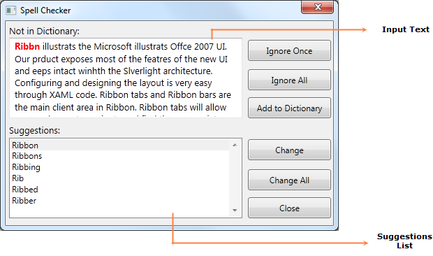

Spell Checking engine allows you to find misspelled words in any control’s text values. Using SpellCheckDialog, we can perform spell checking on any input control and it will also provide sugggestions for the misspelled words.
Use Case Scenarios
You can use Spell Checker to correct spelling mistakes for any input texts.
Appearance of the SpellCheckDialog
Spell Checking engine contains in-built dialog for checking spellings.

Figure 959: SpellCheckDialog
· The Input Text is the text given as input to the Spell Checker to checkthe spellings. The word which is spell-checked will be highlighted in red color.
· The Suggestions List is the list box which will show the suggestions for the currently spell -checked word.
 Adding Spell Checker to an Application
Adding Spell Checker to an Application